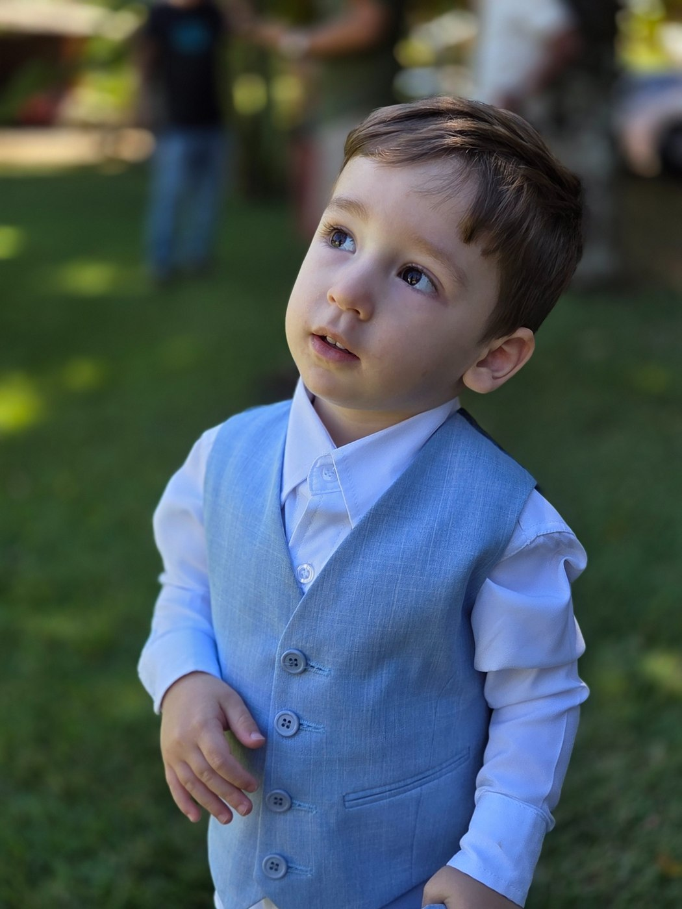
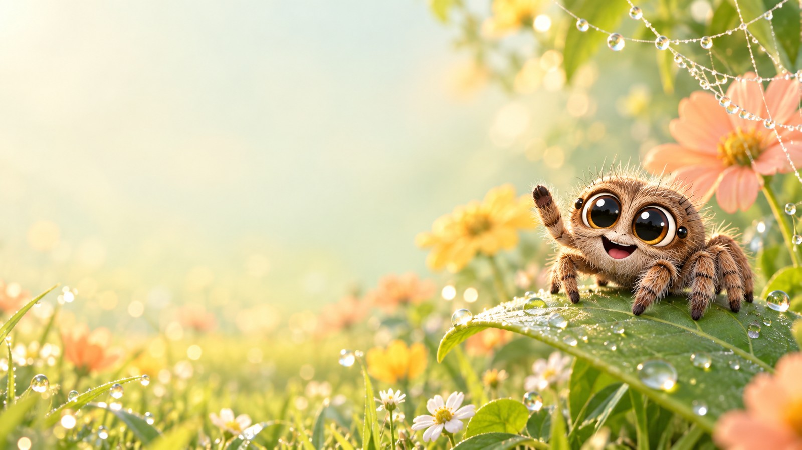

QUANDO
19 DE DEZEMBRO · 2026
Uma pequena aranha.
Uma grande aventura.
Lucas vai
fazer 3 anos!
Com a curiosidade do Lucas, a Aranha e a alegria do nosso Lucas, vamos celebrar um dia cheio de carinho e descobertas.
Você está convidado!
nosso pequeno explorador ♡
3ANINHOSUM DIA ESPECIAL ESTÁ CHEGANDO
Falta pouquinho para a aventura!
—dias
—horas
—minutos
Contagem para o dia 19 de dezembro.
GUARDE ESSA DATA
Uma festa para se encantar.
Vamos nos reunir para celebrar os 3 anos do Lucas.
A sua presença vai deixar tudo ainda mais bonito!
HORÁRIO
A confirmar
Vamos informar em breve.ONDE
Dona Ju
Águas Claras · DFPEQUENOS MOMENTOS, GRANDES MEMÓRIAS
Esse sorriso é a nossa festa.
Um pouquinho do nosso Lucas
e das suas aventuras em família.

CURIOSIDADE, CARINHO E DIVERSÃO
A melhor aventura
é estar junto.
Esperamos você para comemorar os 3 anos do nosso pequeno explorador!
Com carinho,a família do Lucas ♡